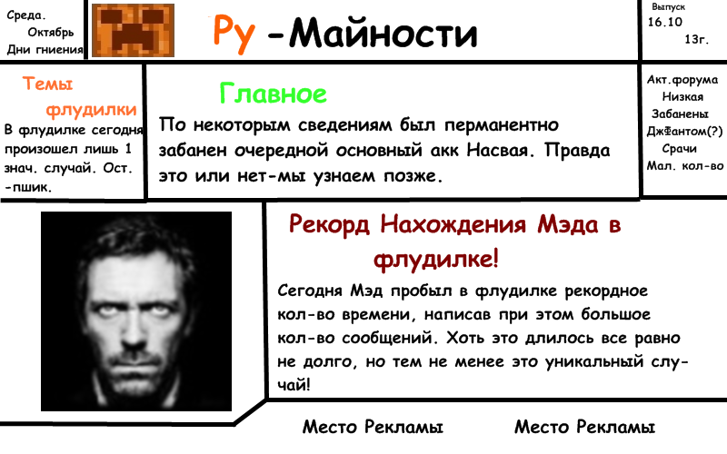
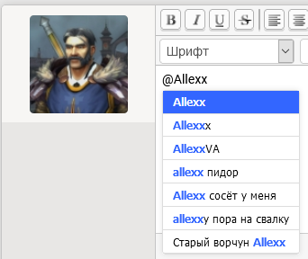
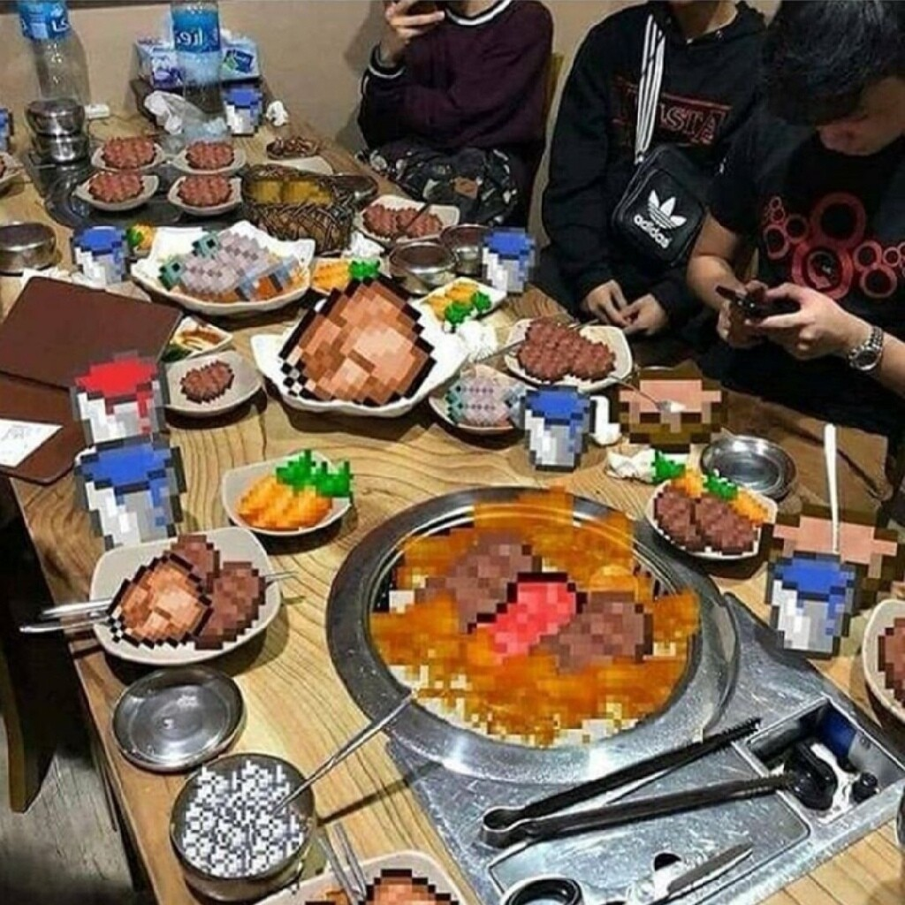
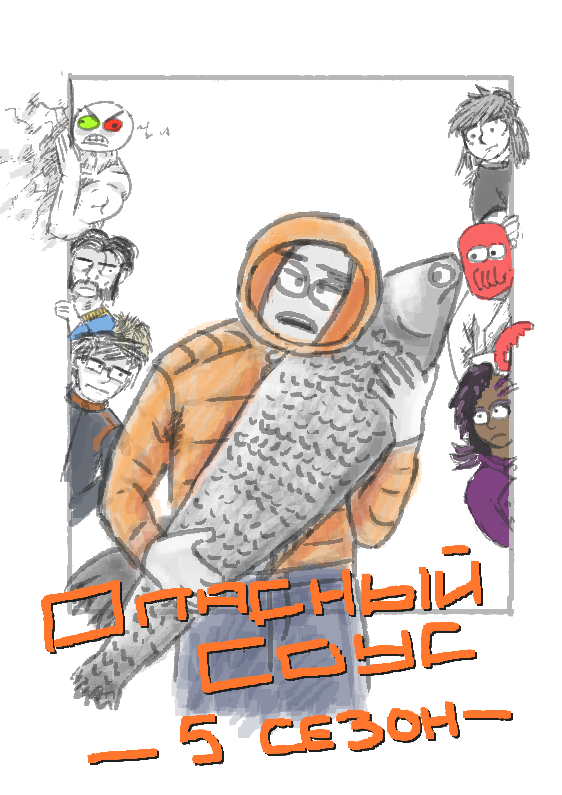
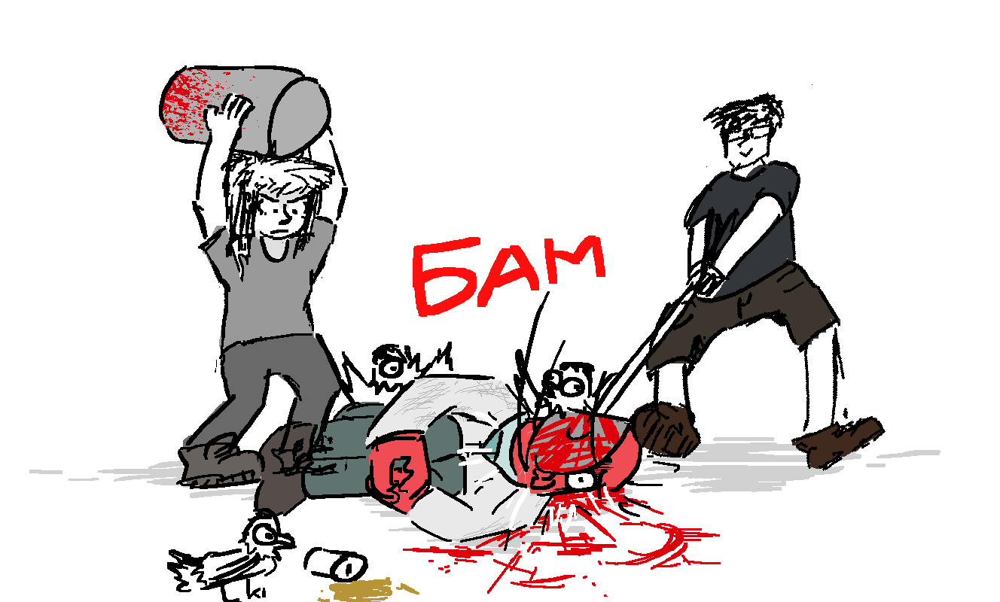
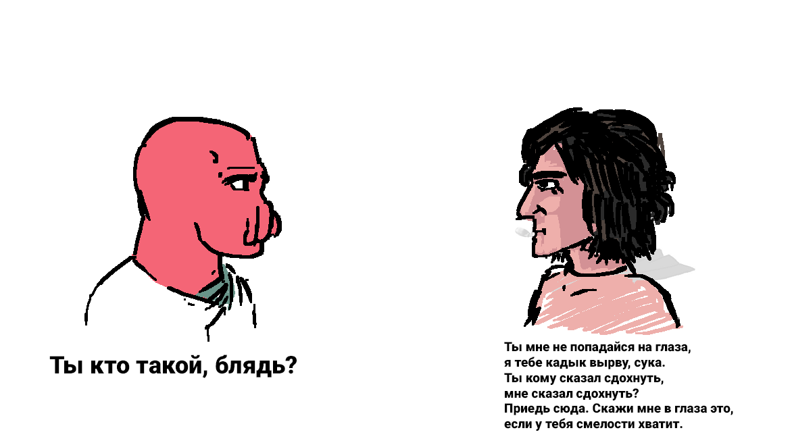
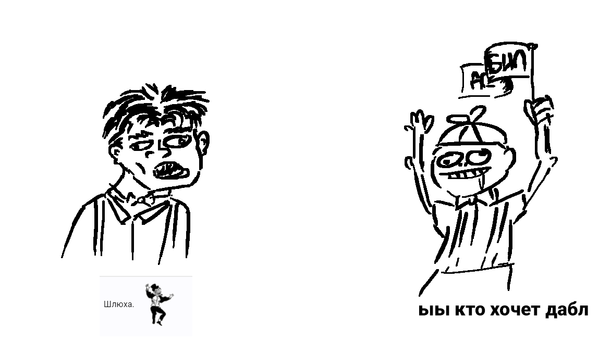
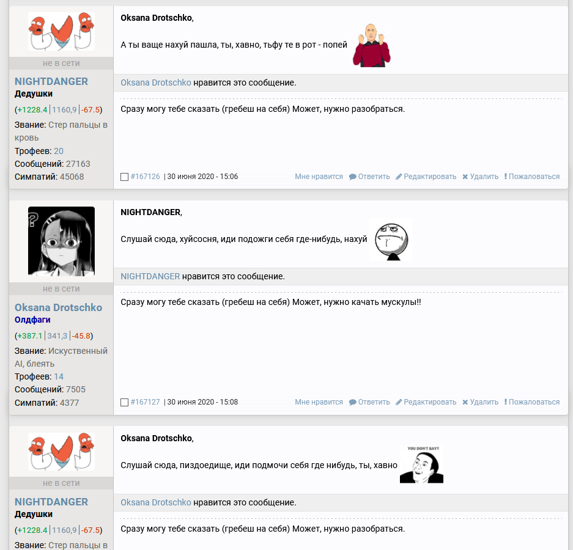

каскадный шизонанс
Успешный пользователь
О газете
Добро пожаловать в 2020 год! Для полного счастья в нём, конечно же, не хватало только ежегодного выпуска Румайностей. Вот он, собственно, и подоспел.
С точки зрения формата ничего нового не планируется. Румайности вам не ВК, не ютуб и не сайты комитета, чтобы редизайны устраивать. Спасибо деду за победу, а вот прошлогодней редакции за основу газеты, с неё мы все и скопипастим.
Cуществует мнение, что текущий год слегка буйнопомешанный. Однако Румине на то и Румине, что он вообще находится вне пространства и времени, и всё происходящее в мире его колышет мало.
Так что же в итоге произошло на сайте? Если кратко, то:
Содержание
Новости
-
2019
Внезапный день добра, внезапные фичи и отсутствие всяких там юзеров года
-
2020
Мрак и шытпостинг со внезапной сменой на адекватную а-а-а-активность
-
Лето
Комикс, лич, батуты и свадьбы
-
Осень
--> Вы находитесь здесь
Сборники контента
-
Цитаты деятелей
Добротные высказывания различных юзеров
-
Руминский архив 2020
Коллекция ссылок и интересных вещиц, созданных активистами
2019
Я сейчас один умный вещь скажу, но выпуск ежегодной газеты в октябре подразумевает забытый период до начала нового года. Но мы-то люди умные, в эту ловушку не попадемся. Так что сейчас расскажем за конец 2019.
Произошло:
-
21 октября вышел новый выпуск Румайностей. Возможно, в прошлой газете этого не было упомянуто. Считаю должным исправиться и достаточно ясным образом обозначить сей пункт в данном выпуске.
-
Гиперактивный Фирст-Уан заслужил почётного гостя на основной аккаунт и кучу забаненых трупо-аккаунтов в подарок за своё буйное поведение и так называемую вакханалию. Наказание всё еще в силе!
 -
14 ноября на сайте появилась новая фича – уведомления! Не, ну тут сами понимаете. Ещё чуть-чуть и дискорд грохнется в гроб, от такого мощного конкурента. В общем отличная функция, всем рекомендую. Простор для исследования и использования просто огромный!
-
23 ноября на сайте cлучилось страшное – Толян aka anatolgol получил группу ДЕДОВ! Ну это, конечно, дизлайк отписка. Такую многовековую традицию отказов в получении деда прервать! Эх Сауз Сауз...
-
На сайте замечена новая группа – Tempocrafter. На этапе прочтения названия все уже заскучали и уснули. Так что продолжать, пожалуй, не будем...
-
Епифанцев на какое-то время пропал из списка рейджей. Но потом в какой-то момент времени вернулся. Магия, не иначе.
-
NIGHTDANGER — один из наиболее уважаемых олдфагов Ру-майна, воплощающий "дружелюбного" краба. Но куда чаще - боль, смерть и страдания. Поэтому имитация этого краба и является "первичной пыткой" олдфагов.
Порфирьевич -
Новогодний день добра
31 декабря обитателям ФЧ пришла чудная мысль – провести День Добра! Да-да, тот самый, узнаете его? Сказано – сделано, и скоро весь чат гулял, шумел, постил шизу и раскапывал могилы! В процессе было выпито много рома, поставлено много лукасов и пинганута целая тьма древних юзеров. Некоторые из них даже появились в ФЧ и присоединились к творящемуся беспределу. Так что праздник удался на славу!
В итоге все пинганутые товарищи в итоге уползли дальше чилить по своим берлогам, а ФЧшники в добром (ага) здравии встретили 2020 год.
{kind=link}
{kind=link}
Юзер Года 2019
Как же там поживает Юзер Года 2019, спросите вы? А никак. Его не было. Вот и сказочке конец.
Начало 2020
мне в последнее время реально хочется перебанить всех здесь и стереть тему к хуям, просто блять собрание объёбанных ебланоидов которым блять нехуй делать в свободное время и высирают свою хуйню думая что это пиздец смешно и ваще смарите я долбаёб и я делаю долбаёбную хуйню
Витле
займитесь чем-нибудь полезным, сука
-
Начало 2020-го отметилось тем, что определенные личности без перерыву срали в ФЧ шизой, тупостью, даблами и прочим шитпостингом. А все остальные причитали про толерантный 2020 год и искали способы заткнуть этих товарищей без поднятия собственной жопы с дивана. В общем зрелище было то ещё.
-
В апреле-мае была объявлена и даже выпущена очередная версия Симулятора Румине, ох радость-то какая! Ссылки на это чудо будут в новом разделе газеты, который располагается где-то на дне. Страницы.
-
Примерно тогда же была совсем слегка обновлена вики. Самую чуточку, буквально капельку. Никто в процессе не перетрудился.
-
Рейдж Пумбы :D стал популярен как никогда! Как вообще можно устоять перед желанием вставить в свой пост лик данного молодого человека?
-
Вскрылась страшная правда о Саузе и истинном предназначении сайта. Подсказка: возраст посетителей всё понижается, а админ у нас всё довольнее и довольнее...
 -
В ФЧ была открыта Америка в виде уменьшенных версий рейджей из новостной части сайта. Пишутся они через точку с запятой (;) вместо двоеточия и обладают размерами этак в 2 раза меньше обычных. Не то чтобы ими стали после этого пользоваться, но...
-
В мае из-за прибытия новых личностей в ФЧ внезапно стало вполне живенько, а на смену нытью про коришневые стены пришли какие-то нормальные человеческое разговоры. А*тивность (запрещенная на территории Румине организация) в этот период поднялась до каких-то неимоверных высот для 2020 года.
-
В самом конце мая зародилась славная традиция БАТЛА между Витле, Зорретой и Нойтом. И хоть основная часть битвы произошла уже летом, но началось всё именно в мае.
{kind=link}
{kind=link}
dev-urandom лох, объелся блох, сел на лавочку и сдох
dev-urandom.eu постиг суровый рок. Спустя много месяцев бездействия и даже парочку-троечку-четверочку недель выключенного сервера версию минекрафта и карту там всё же обновили. Однако без подвоха, разумеется, не обошлось, потому как к новой карте в виде подарка прилагался модератор Салах. Личность, которая просто замечательно относится к русскоговорящим игрокам и не упускает возможность выдать банца за намеки на кириллицу в чате. За это ли в Руминском Союзе деды воевали?? С новым дурацким админом и модерацией дев-рандом стал попросту никому не интересен, и Руминцы там так и не сыграли. Заменой стал блок-кафе, но это уже совсем другая история... .
Лето 2020
Доброе утро, Толян!
Каждый
-
Комиксо-Батл
Да-да, он самый! Большая часть батла прошла в самом начале лета. Почти что славной традицией стало наблюдать в ФЧ метающихся друг в друга кусками комикса товарищей Витле, Нойта и Зоррету. Полный список всех ответов у нас кстати есть, но мы его вам не дадим, документов нету. найти его можно в самом конце данного выпуска. Спешите поставить туда колокольчик, ведь акция ограничена и через 10 лет ФЧ удалится, равно как и те знаковые посты!
Где комикс?
Счастье, однако, продлилось недолго, всего-то каких-то 10+ выпусков. Ведь в конце концов Нойт сказал, что комиксов больше не будет. Твёрдо и четко! Чел сказал и чел сделал, никаких комиксов более не видали много недель, тогда как перерыв между прошлыми сериями был максимум в день-полтора. Остальные участники батла остались этим крайне недовольны и всё лето мотивировали Нойтецкого-таки продолжать комикс! Не совсем успешно. До некоторого момента...
Внезапно!
В августе роли поменялись. Теперь уже Нойт требовал комикс с Зорреты и Витле! Ну да, со своими раундами он не спешил, ну а кому в такие времена легко? В итоге из комикса вытянули ещё пару жизней и ответов уже даже в сентябре, так что за пару месяцев в итоге получился целый неописуемый трактат из длинных-предлинных картинок. С чем я вас всех и поздравляю, вот.
-
Капут-противогаз в мае в поте лица трудился над чудесной минекрафт-картой, однако 2-го июня произошло непоправимое... Командный блок жестоко отомстил за попытки его использовать, и одна роковая набраная команда стала постоянно телепортировать Капута в четко определенное место мира. Совладать с этим состоянием Капут так и не сумел. Так бесславно и закончилась история карты минекрафт от скина с обсидиановым Ленином... Да и сам Капут почти сразу же после этого пошел лешоп в ИРЛ (рабство) и исчез с Румине на неопределенный срок.
-
4 июня без объявления войны chaj хапнул модератора. Голубенького такого, красивого. Как у Витле. Да-да, мистер Чай и модератор!! Кой-у-кого это вызвало определенные ВОПРОСЫ, но когда стало ясно, что модератор-то ненастоящий! и без форумных прав, то всё встало на свои места. Причина очень проста – Саузу было влом (как удивительно) делать отдельную группу для модератора комментариев, должность которого как бы и стал занимать чяй. Так что выдали модератора обычного. И так сойдет!
-
13 июня нас посетил мистер Кнанеп и рассказал чё как житуха. Отметил, что, возможно, ему стоит вернуться. Но в другой день, так как времени нет. Ждем того дня до сих пор...
 -
24 июня в ФЧ налетели дискордеры с соответствующим порноспам-контентом, а некоторые из них ещё и с весьма странными просьбами. Надолго на сайте они не задержались, хоспаде, это же дискордеры в конце концов!
-
25 июня появился Храм Моуса. Без комментариев.
-
С конца июня "человеческие" разговоры вместе со значимыми событиями в ФЧ окончательно кончились, и он частично вернулся к шизо-шыт-постингу из начала года. Шизокапиталисты, комиксоеды, шытпостеры, бесконечные даблы, морепродукты, завсегдатаи бани и прочие подозрительные личности! Состав ФЧ явно был на высоте.
-
В июле-августа в ФЧ активно буянил лич. Великий лич. Такое у нас иногда бывает. Обошлись с ним как и всегда – сожгли на пламенном костре инквизиции вместе со всеми его воплощениями. Однако потерянные нервные клетки уже не вернуть...
{kind=link}
{kind=link}
Осень 2020
-
Тссс...
-
Некто "Аллех" впервые достиг 50 000 сообщений и получил соответствующий трофей. А вот новое звание не доехало, так что его название остается неизвестным (на веки вечные, судя по всему).
-
К октябрю активность крайне уверенно поехала куда-то вниз. Впрочем, ничего нового в этом нет. Осень, что ж тут поделаешь...
Цитаты деятелей
Новенький с иголочки раздел газеты для знатных высказываний современных деятелей Румине! Цитаты эти характеризуют Румине 2020 во всём его многообразии и отлично передают дух времени. Жаль только, что идея пришла довольно поздно.
Админская секция
Насчет всех вопросов, отвечать мне лень, спрашивали че то про форум, форум нахуй никому не нужон, тут сидите тока вы и те у кого крашится, потому на его развитие я положу большой такой хуец.
south_park
Насчет удаления говна, говно бывает разное, покажи мне говно и я скажу почему не удалил его.
south_park
будешь гореть дальше, я лично с тобой совокуплюсь и запощу это на инсайде :mBin:
south_park
простите, времени нет, а еще надо моды обновить и все такое, ну вы понимаете, дети уже ждут, ну вы поняли да
south_park
знаете, я своего рода любитель экспериментов по жизни
south_park
вот вы вот критикуете всякое это такое, а мне вот нравится, я никого не заставляю, но стоит попробовать и разобраться, мир намного более широк и приятен чем вам кажется, перестаньте смотреть на других....
привет
MadMoss
досведос
Прочие
Утречка!
anatolgol
Ребята, ну могу вам сказать только одно. Сауса съел коронавирус (и ширка, которой он уже как 2 года увлёкся), сайт закрывается, все получат по жопе.
3um
Щитпостинг это кто? (who?)
._TastyPill_.
Ещё раз слышу щитпостинг и нафрезерую тебе ебало
dedepete
предлагаю всех забанить нахуй и удалить форум
Wheatley
Я в своём познании настолько преисполнился, что как будто бы уже 100 триллионов миллиардов лет проживаю в триллионах и триллионах таких же ФЧ, понимаешь?
Allexx
Однако спустя 100 триллионов лет умение отличать рофло-альтов от настоящих аккаунтов странных людей потерялось окончательно.
Лол что я пришел в апреле 2019 и засрал весь форум, теперь известен как первая еденица (Ф1рст 0не) или-же чмо, уебище, мудило, фирст, чебурек, чечубрек.
Фирст-Уан
Я не умирал, я уходил в Ад на перегруппировку
Капут-противогаз
Тут кстати такая активность всегда, или сейчас просто не время?
CheshirX
Да не, простая арифметика - если в неделю мы пишем, в среднем по 100 страниц, то до 10.000 20 недель, то есть 5 месяцев. Сейчас почти 6 месяц, так что к началу декабря должны успеть, но учитывая, что темп неравномерный, а также отпуск в 1 месяц как раз получается 10к к 31 декабря.
К тому же, сейчас с выходом 1.16, а также, если мы начнём клепать новости у нас появится приток ньюфагов, и у нас будет больше тем для обсуждения
CheshirX
:ololoshapokerface: лимит активности на сегодня исчерпан. Давайте, по йогурту и в бан. :stare:
Oksana Drotschko
хаха лопата делает вжжжжжжжж-бдыннннь
Wheatley
вы че ебанутые, че несете, идите лучше на завод ребятки :chan:
Sab
Третьего дня, по совету проверенных художников, приобрёл новый мегадевайс — рисовальщик комиксов «Нойт-3000»...
Зоррета
Нойт - это пот, выступающий на лбу умершего, это роса смерти. Вот что такое Нойтец.
NIGHTDANGER
Я всё ещё жив. :nudaeIII: Это недоразумение следовало бы исправить.
Ghost_Kpunep
SEPTEMBER FIRST
5 0 0 0
p.s. если вашей цитаты здесь не оказалось, то не надо паниковать и звонить в спортлото оао госзнак регистрет 1980, просто иногда приходится идти на жертвы ради релиза в срок....
Архив
Полюбила паpня я,
Руминские народные частушки
Да оказался без фрундля.
Да на фрундля ж мне без фрундля,
Когда с фрундлем дофрундля!
Относительно новый раздел газеты, произошедший из пользовательского креатива. Теперь здесь будут храниться ссылки, картинки, ссылки на картинки, видосы и прочее добро, что я сочту достойным. А, как вы знаете, вкусы у меня весьма специфичные...
Примечательные ссылки
-
Новогодний день Добра 2019
Вдруг кто-то решит прочитать...
Творчество
-
Эпизод Румине "Истории о Былом". Криндж версия!
Что-то после этого настоящих эпизодов больше не видать.
Комиксо-батл
Симулятор Румине

-
Симулятор Румине v5.2011
Прототип новой исторической версии симулятора, выпущен в апреле -
Симулятор Румине v5.2012
Более продвинутая, но и более всратая версия, содержащая 2012 год. Не рекомендуется, без поллитры не разобраться -
Опрос страждущих
Выясняем, что получилось хорошо, а что не очень. В настоящий момент уже бесполезен, однако интересен как явление. -
Симулятор Румине v5.2012+
Последняя выпущенная и пока что самая адекватная версия из всех. Там даже чейнджлог есть!